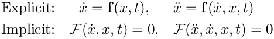

Goal
The primary goal of Example 5: Introduce Stepper is to introduce Tempus::Stepper through Tempus::StepperForwardEuler while preserving the same Thyra::ModelEvaluator-based van der Pol model, the same Tempus::SolutionHistory, the same simple tabular output, and the same application-managed time loop used in Example 4: Add SolutionHistory.
Tempus::Stepper performs a single time step by applying the algorithm associated with a particular ODE formulation, such as an explicit update formula or an implicit linear or nonlinear solve. In doing so, it uses the governing equations provided by the Thyra::ModelEvaluator in their explicit and/or implicit forms.
Upon completion of the step, the Tempus::Stepper updates the next Tempus::SolutionState (the working state), reports the solution status (for example, passed or failed), and may propose a timestep size for a future step. In this way, Tempus::Stepper separates the time-stepping algorithm from the details of the governing equations in the Thyra::ModelEvaluator, the linear and nonlinear solver infrastructure, and the orchestration of multiple time steps.
New concepts introduced are:
- Tempus::Stepper
- provides an abstraction for a time stepping algorithm
- Tempus::StepperForwardEuler
- implements the Forward Euler method as a Tempus stepper
setModel(...)- attaches the application model to the stepper (i.e., Thyra::ModelEvaluator)
initialize()- prepares the stepper for use
setInitialConditions(...)- ensures that the initial solution history is consistent with the stepper and allocates any stepper-specific state as needed
takeStep(...)- advances the working solution state through the stepper
Note: A solution state is termed "<b>consistent</b>" when the solution and its derivatives satisfy the governing equations at time

This is the first step in separating the stepping algorithm from the surrounding application logic. Rather than coding the Forward Euler right-hand-side evaluation and update directly in the time loop, the application now delegates that work to a Tempus stepper object.
What stays the same
- The van der Pol model is still provided by a Thyra::ModelEvaluator.
- The application still manages the overall time loop directly.
- The application still manages the Tempus::SolutionHistory.
- The timestep size is still selected manually and assigned to the working state by the application.
- The output table still reports the step index, time,


- The regression check remains a separate final comparison.


Selected code excerpts
The code excerpts below highlight the main changes needed to replace the hand-written Forward Euler update with a Tempus::StepperForwardEuler.
Construct and initialize the stepper
Create and initialize a StepperForwardEuler. The application now constructs a Tempus::StepperForwardEuler. A Tempus::Stepper needs access to the governing equations through a Thyra::ModelEvaluator, so the model is attached to the stepper. Because the stepper is constructed in stages, initialize() is then called to complete its setup before stepping begins. Finally, setInitialConditions(...) ensures that the initial Tempus::SolutionHistory is consistent with both the governing equations and the stepper.
Before
After
Replace the hand-written update
Delegate the step to the stepper. The details of the Forward Euler update, including interaction with the Thyra::ModelEvaluator, are now handled by Tempus::StepperForwardEuler. In this way, the stepper encapsulates everything needed to perform a single Forward Euler time step. This also makes it easier to replace Forward Euler with another Tempus::Stepper while leaving the surrounding application-level time-loop logic unchanged.
Before
After
The stepper now performs the model evaluation and Forward Euler update.
Use the status assigned by the stepper
Use the solution status set by the stepper. The Tempus::Stepper sets the status of the working state as part of takeStep(...). As a result, the application no longer needs to set the pass/fail status explicitly after the Forward Euler update. The remaining task is to promote the working state through the solution history.
Before
After
The time loop is still application-controlled; only the single-step algorithm and step-status assignment have moved into the stepper.
As in the updated examples, final tutorial success is determined after the loop by combining the final state status with the separate regression test.
How to compare the examples
A more detailed comparison can be made by diffing:
examples/04_Adding_SolutionHistory/04_Adding_SolutionHistory.cppexamples/05_Intro_Stepper/05_Intro_Stepper.cpp
From the packages/tempus directory, a focused comparison of the main time-integration logic between these two examples can be generated locally in bash or zsh with:
This ignores leading header lines (e.g., #include statements and Doxygen comments) and trailing regression-testing lines.